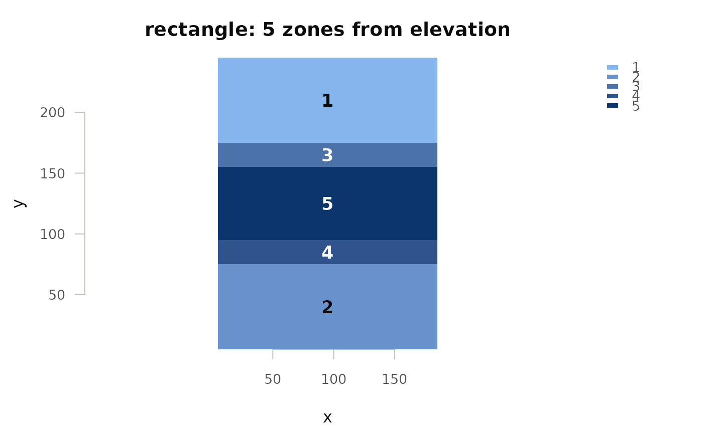

The zones from partition_paddock() or partition_pseudo_env(), as a map.
This is the check that matters on a partition: whether the zones are shapes
you could actually work, and whether the boundaries fall where the paddock
changes or somewhere arbitrary.
Usage
# S3 method for class 'ofe_zones'
plot(x, zone = "zone", label = TRUE, main = NULL, ...)Arguments
- x
An
ofe_zonesobject frompartition_paddock()orpartition_pseudo_env().- zone
Character; the zone column, if it was not named
"zone".- label
Logical; write the zone number on each zone.
- main
Plot title.
- ...
Passed to
ofe_map().
Details
Zones are ordered, so they are drawn on one hue running light to dark rather than in unrelated colours, and each carries its number, so identity never rests on the fill – which matters past seven zones, where the steps stop being separable.
Examples
g <- expand.grid(row = 1:24, col = 1:18)
g$x <- g$col * 10
g$y <- g$row * 10
set.seed(1)
g$elevation <- 100 + 6 * exp(-((g$y - 120)^2) / 2000) + rnorm(nrow(g), 0, .2)
plot(partition_paddock(g, covariates = "elevation"))
